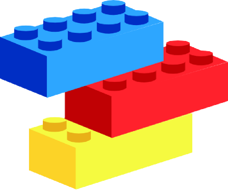
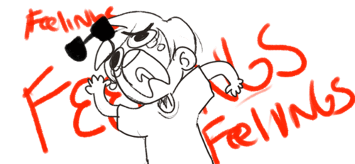
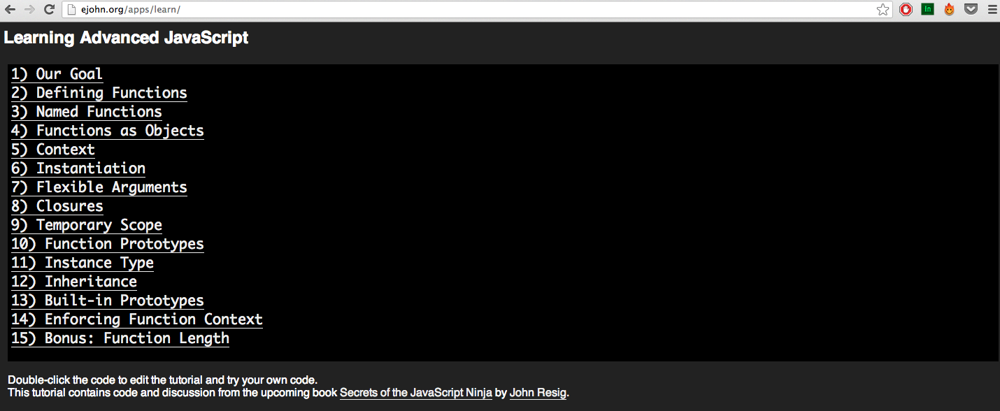
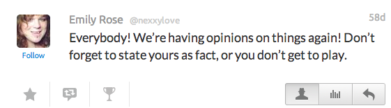
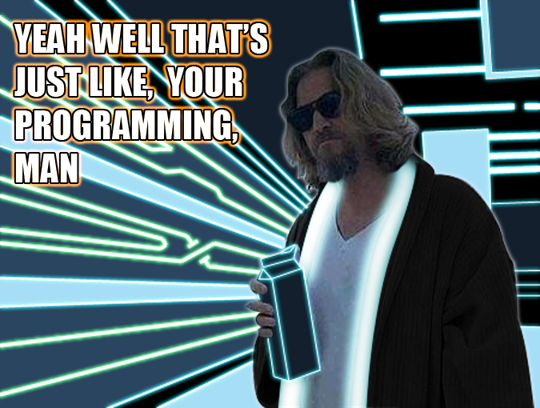

HTML & CSS
@Diego_WiFi
Un poco de historia
¿HTML y CSS?
¿Eso con qué se come?
HTML = Estructura
HyperText Markup Language
CSS = Diseño
Cascading Style Sheets

No soy un experto
Estamos en el año 2014
Voy a contarte un secreto, quizás no te guste lo que vas a escuchar. Al principio a mi también me dolió.
HTML Y CSS NO son lenguajes de programación.
Veamos los tres tipos de diseño web
El malo
El feo
Hola Mundo!
¡Acabas de hacer tu primera página web!
Sorry moms of the world but this is like a motivational anti-pattern.
Nobody is born with 'natural talent'

You are the result of many complicated interactions
Influences that can 'make' you 'a natural'
- Genetics
- Epigenetics (Environmental pressures affecting gene expression)
- Early childhood exposure to logical thinking
- Early childhood practice of logical skills
- Early framing of relationship to logical thinking
Your feelings don't matter here
"In spite of popular beliefs there is no one thing you're destined to do. Purpose doesn't happen to you any more than love does. These things evolve when you commit yourself fully to something, or someone, and make the decision to work through the muck."
from Deliberatism - The Muck, by Eric Karjaluoto
Problematic framing of this topic
Nobody's special?
Not born with natural talent?
This is empowering
If you practice logical thinking
and if you practice programming JavaScript a lot
and absorb enough domain knowledge
You too will become an expert
How do I know I am not a beginner?
You can use the fundamentals in any language
You are comfortable writing code from scratch
You peek inside the libs you use
You feel like your code is mediocre
you don't know what to do about it
How do I know I'm not an expert?
You don't quite grok all the code you read
You can't explain what you know
You aren't confident debugging
You rely on references way too much
Ambiguous Zone of Intermediate-ness
a curriculum for mastery
What makes a great programmer?
It depends who is asking
"To a project manager, the programmer who hits every deadline (regardless of quality) is a good programmer.
To a customer, the programmer who solves their problem quickest is a good programmer.
To a business owner, the programmer who makes them the most money is a good programmer.
To a junior programmer, the best mentor is the good programmer.
To another programmer, the programmer they are most likely to want to go into battle with is a good programmer."
- Ed Weissman
What do I need to learn to be an expert?
What do I do?
Ask why obsessively
Teach and/or speak at an event
Work through a suggested curriculum (books)

Experiment recklessly (the code doesn't care)
Have opinions


Seek mentorship
Program a lot
Stop fucking programming sometimes
Write JavaScript a lot
Write in another language for a while
Think like a programmer when AFK
Know what feedback is good feedback and reject all else
Some people aren't very happy with themselves
Good feedback vs. Troll feedback
Break free of imposter syndrome
If you write code you are a programmer: The end
Fall in love with your process
Thank you wonderful humans
Javascript Masterclass
@angelinamagnum